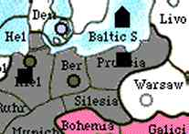
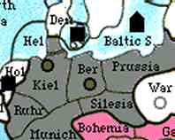
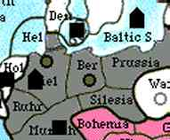
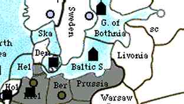

Round and Round the Kaiser goes,
Leading opponents by the nose.
Hearken to this bit of prose,
Then try it on your friends and foes!
There have been many articles over the past issues of the 'Zine, concentrating on nopress openings and the play of Germany. Brandon Clarke already made a most excellent rebuttal to M.J. Yachtman's assertions that Germany and others were limited to certain opening moves in nopress that had to be made. The clearest rebuttal of all to be made is, of course, that if everyone around you was playing the same opening every time it would be akin to having copies of all their Spring 1901 orders!
What does all that have to do with the title of this article? Not much, except that these debates inspired me to take a look at an old nopress game where I engineered a very non-standard opening for Germany. So non-standard in fact, that for all my research I have yet to see it listed anywhere or having even been mentioned as an option.
"Well!" some may huff, "If all the geniuses who have played Diplomacy for decades never brought it into enough use to be considered, it must therefore be substandard and not worth the bandwidth you're printing it on! You're not even on the YARS page… I think you overstep yourself, my good man!"
Don't be so sure -- I went on to take the game with a solo victory. Was it a fluke of circumstance? That can't be answered unless others out there take a stab at it (pun very much intended). Can it succeed with any regularity? Does it work better in press games? Gunboat or non-Gunboat? I have my theories -- but for now gentle readers, I will simply put it forth for your consideration.
I entered the game 'chaos2' some years back, which despite its name was simply a Standard, nopress Gunboat game. I joined it requesting Germany, specifically with the plan of trying the new opening and seeing if it worked out. It had no cute name until I started writing this article and was trying to come up with a good designation for it, since I'm already being so ambitious as to think it hasn't been "patented" yet. At the time as well, I had no idea if there was any point to it since it might very well have led to a loss. I was forging some new territory and hoping for the best.
The idea behind the Centrifuge is simple: effecting a concerted German attack on Russia by 1902, without any close alliance to other countries for the purpose. The irony of the Russo-German situation in Diplomacy is that, while most everyone agrees that Russia and Germany must eventually come in conflict, it is also considered that for Germany and/or Russia to attack each other in the opening stages of the game is foolish and counterproductive. At most, an anti-Russian opening for Germany is counted as bouncing the Tsar out of Sweden -- hardly a major offensive.
These reasonings are not unsound, based as they are on the empty zone stretching from Prussia to Galicia. It is truly impossible for Russia to put two units on Berlin or Munich for Fall 1901, and for Germany to put two units on Warsaw requires leaving the West open and forgetting about Holland (it is assumed F Kie-Den in conjunction with this). Russia's attack on an unsuspecting Germany becomes a one unit guessing game that almost assuredly lets Austria take Galicia and threaten Warsaw in the rear. Germany attacking an unsuspecting Russia faces threats to Munich and its otherwise assured neutrals, and can easily fail with A Mos or A Ukr supporting Warsaw to hold. Even if the attack on Warsaw succeeds, Russia can be much like its real life counterpart -- early gains leading to stagnation in the interior, and eventually destruction (though such usually comes at the hands of other powers, not Winter). In any case aggression from one or the other is inevitably telegraphed due to centers being a year apart and neither having legitimate peaceful business in the empty zone.
If there is a good anti-German opening for Russia in 1901, I leave it for some other scribe to exhibit. On the German side, the empty zone phenomenon means that two crucial elements of a Diplomacy attack are lacking when you go after Russia: surprise and speed. The Centrifuge sets out to redress this, using a variation of a Baltic opening.
(Note: All analysis assumes a no-press game.)
|
Spring, 1901 Fleet Kiel -> Baltic SeaArmy Berlin -> Prussia Army Munich -> Kiel |
 |
At this point everyone, especially Russia, is probably boggling at your inept insanity. You seem anti-Russian but didn't go in force or open F Kie-Den, nor did you move to Silesia to support Austria. While this could lead to them turning on you, in 1901 everyone is generally much more concerned with grabbing neutrals... take advantage of that! Even if France opens to Burgundy as usual, you've left Belgium behind as a far tastier treat for him to try for than Munich. If you're very lucky, the lack of Army Ruhr will provoke a struggle over Belgium between England and France and they'll start warring with each other, figuring they can leave your confused keester for later. People can afford to be vultures once they have their neutrals, usually not before.
As for moving to Prussia instead of Silesia and Kiel moving to Baltic rather than Denmark, there is a method to your madness. In this opening I cannot stress enough that Austria is your friend. If he crumbles, Russia will easily get the builds to fight you off. Much like with a move to Silesia, an army in Prussia causes a headache for an anti-Austrian Russia as he tries to decide whether to press his attack south or cover Warsaw. Russian coordination with the Turk, especially in no-press, will still be difficult, and an alert Austria will jump on this confusion and take advantage.
Unlike the move to Silesia, your move allows this:
|
Fall, 1901 Fleet Baltic Sea CONVOY Army Prussia -> DenmarkArmy Prussia -> Baltic Sea -> Denmark Army Kiel -> Holland |
 |
Now you've really got them confused. Russia, if it moved to counterattack, now has nothing to fight. Even better, if he figured on F Bal-Swe (quite possible, since in Spring you're obviously moving on him and A Kie can take Denmark) and ordered the savvy F GoB-Bal in response, he bounces and doesn't get Sweden! Meanwhile you've taken both your traditional neutrals and staged a "retreat" from his borders.
Once again, if you're lucky people will see you as merely confused rather than with a long term plan in mind. Russia will probably still be wondering about F Bal but should be breathing a sigh of relief at Prussia's evacuation. This is where the surprise factor comes in. First, you want to reinforce Russia's relief with some neutral seeming builds.
|
Winter, 1901 Build Fleet KielBuild Army Munich |
 |
England might be nervous about the fleet, but should hopefully be embroiled in a French war at this point. If not and he decides to attack, you have the option at this point of foregoing your attack on Russia and moving on him instead. A Den-Kie, F Kie-Hel, F Bal-Den puts two fleets on the North Sea, and rather than helping England Russia will likely use the respite to concentrate elsewhere. You didn't try to bounce him in Sweden, after all.
What you want though is for England to not be thinking long-term about what your fleets mean, and for Russia to not see that your retreat last turn was merely the precursor to a tsunami of black about to hit his shores. There's only one way for armies to move farther than one space in a turn, and that's to be convoyed by fleets in open water. This is the turn your "insanity" blossoms into bitter fruit for the Bear as you achieve surprise and the means for speed in one fell swoop.
|
Spring, 1902 Fleet Baltic -> Gulf of BothniaFleet Kiel -> Baltic Sea Army Holland HOLD Army Denmark -> Sweden Army Munich -> Kiel |
 |
Die boom ist lowered. You might see now why I decided to call this the Centrifuge (I also toyed with "Barbarossa Boomerang" before deeming that to sound far too much like a dance step). You circle yourself around, gain momentum (two new builds), and then proceed to anchor on Holland as you fling yourself straight up into the heart of Russia. If the Russian fleet is still in the GoB you may have to delay, but if Russia didn't get Sweden (as F GoB entails) and he's not progressing in the South, you should have a wide open North for other options like F Bal CONVOY A Denmark -> Livonia. If the fleet is in Sweden you should be home free for F Bal-GoB, as F Swe is highly unlikely to move anywhere with you and England (presumably in Norway) threatening it. F Swe-GoB at this point undoes all your hard work, but no one ever said Diplomacy was a sure thing! If it works, you're in position to take Northern Russia, Scandinavia, and eventually swing around to invade England and secure the North side of the map. This beginning "circle" is only a precursor to a larger spiral "radar sweep" which should have you well on your way to victory!
As far as trying the 'fuge in a press game, my gut feeling is it would be harder to pull off; however, your diplomatic goals with each country would be as follows:
So there you have it. In a follow-up article I will show the Centrifuge in practice and not just theory by going turn by turn through "chaos2" and commenting on how events panned out on the road to the German victory. Now of course, many people who play Diplomacy read The Pouch (go figure), and so may be prepared for you if you play this opening. But the true beauty of the Centrifuge is how many options it gives and how quickly you can discard one path in favor of another opportunity. As Germany you sit in the center and need to be not only aggressive but flexible as you fight your way to some elbow room... fortunately your position allows you to switch fronts rapidly as new wars develop and old ones fade. More than any other country, Germany can't afford to sit back early on, or take conservative routes -- Germany rewards a "swashbuckling," daring style of play so long as you keep your goals in sight and your wars on one front. Don't make too many enemies at once, but go after the ones you have! Blitzkrieg -- not Sitzkrieg! With a little luck and skill, the Centrifuge will have you dominating Scandinavia, wintering in St. Petersburg in 1903, and keep you moving until all Europe bows at your boots. Vorwarts!

|
Clinton Wolf (wolf@oxy.edu) |
If you wish to e-mail feedback on this article to the author, click on the letter above. If that does not work, feel free to use the "Dear DP..." mail interface.